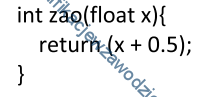

Pytania z egazminów EE08/E14
Proces filtracji sygnału wejściowego w dziedzinie czasu, obejmujący zasadę superpozycji, związany jest z filtrem
- przyczynowym.
- liniowym.
- o skończonej odpowiedzi impulsowej.
- niezmiennym w czasie.
sprawdź odpowiedź
odpowiedz:
B
Który z obiektów relacyjnej bazy danych, będący kodem języka SQ, może być wywoływany w zapytaniach modyfikujących kolumny danych widoczne jako tabela, bez względu na to czy jest tworzony programowo, czy dynamicznie?
- Procedura składowa.
- Wyzwalacz.
- Reguła.
- Funkcja zdefiniowana.
sprawdź odpowiedź
odpowiedz:
B
Jaką wartość zwróci funkcja zao zdefiniowana w języku C++, wywołana z aktualnym parametrem 3.55

- 4.05
- 3.5
- 4
- 3
sprawdź odpowiedź
odpowiedz:
C
W języku HTML zapis & lt; spowoduje wyświetlenie w przeglądarce znaku
- "
- &
- <
- >
sprawdź odpowiedź
odpowiedz:
C
Certyfikat SSL jest stosowany do
- blokowania szkodliwego oprogramowania w witrynie
- zidentyfikowania właściciela domeny
- deszyfracji transmitowanych danych
- zapisania danych o sesjach tworzonych w witrynie
sprawdź odpowiedź
odpowiedz:
B
Aby obraz zmieniał się płynnie w filmie, liczba klatek (nieprzenikających się wzajemnie) na sekundę musi znajdować się przynajmniej w zakresie
- 31-36 fps
- 24-30 fps
- 16-19 fps
- 20-23 fps
sprawdź odpowiedź
odpowiedz:
B